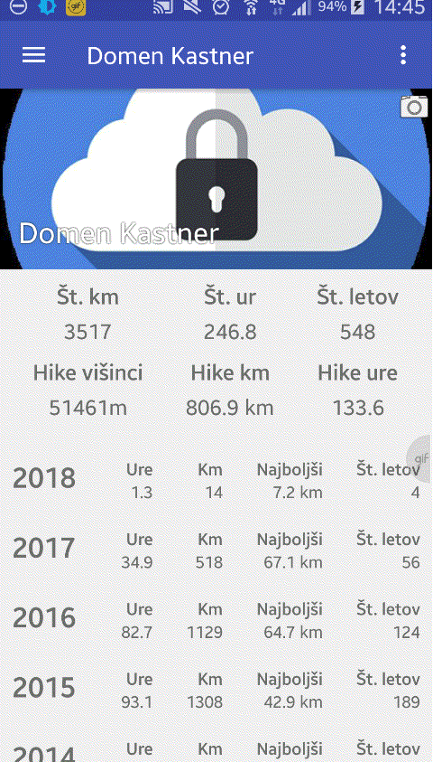
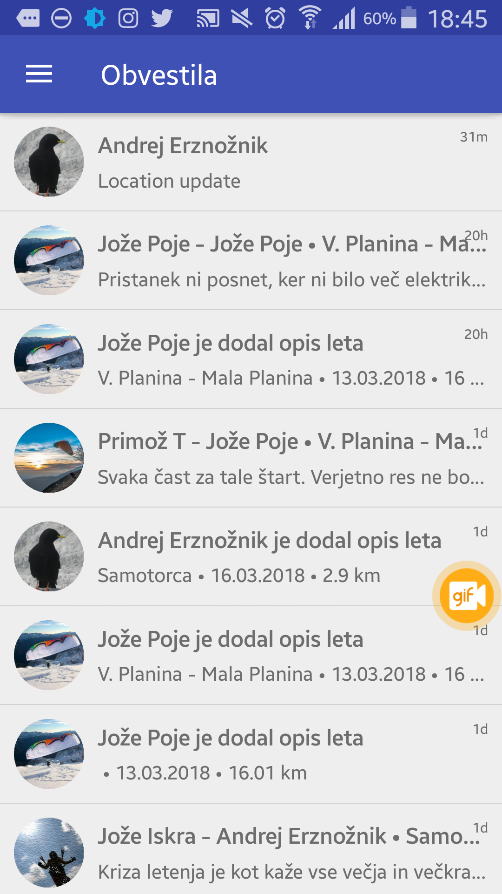

Hitra navodila za aplikacijo FLySafe

Uvod
Pri prvem zagonu aplikacije FlySafe vas ta vpraša po vaši E-pošti ter geslu.
Po novem je možnost prijave tudi z vašim Google računom.
V kolikor nimate google računa izberite Registracija
in vpišite E-poštni naslov ter poljubno
geslo katerega si zapomnite in izberite Pošlji.
Po prijavi se vam na vpisan E-naslov pošlje potrditveni Email
v katerem prejmete povezavo za aktivacijo računa FlySafe.
Ko to storite ste aktivirali svoj FlySafe račun in se lahko prijavite z prej vpisanimi podatki.
Da bi nemoteno sledili navodilom predlagam, da si najprej pogledate kako dodamo prijatelja v meniju "prijatelji"
S pritiskom na ikono levo zgoraj se vam odpre navigacijski meni, kateri zajema naslednje možnosti:
- terrain Vzletišča
- view_list Dnevni pregled
- view_list Zadnji leti prijateljev
- person_add Prijatelji
- place Lociraj prijatelje
- notifications Obvestila
- file_uploadNaloži IGC/GPX
- build Nastavitve
Če pritisnemo na profilno sliko se vam pokažejo vaši statistični podatki letenja po posameznih obdobjih. Za podatke o naletenih urah vašega padala kliknite na more_vert ikono v desnem zgornjem kotu. Za ogled letov v določenem letu kliknite na željeno sezono. Za porazdelitev letov od najdaljšega navzdol kliknite na sort ikono zgoraj desno.
Vzletišča
V meniju vzletišča imate na zemljevidu prikazana vsa vzletišča označena z krogci brightness_1 različnih barv. (Nastavitev prikaza vzletišč je možen z izbiro more_vert ikone ter tam izberite nastavitve vzletišč)
-
brightness_1 Točka vzletišča
-
brightness_1 Zeleno obarvan krog prikazuje vzletišče iz katerega ste vi že vzletli.
-
brightness_1 Vzletišče, ki je obiskano bolj pogosto in ima zabeleženih 50+ vzletov
Za prikaz informacij o posameznem vzlatišču ga s pritiskom na krogec izberemo
(Za lažjo izbiro si približajte zemljevid tako, da z dvema prstoma naenkrat podrsate
po ekranu eden od drugega).
Prikaže se nam ime vzletišča ter koliko
prijavljenih vzletov smo od tam že zabeležili.
V kolikor še enkrat pritisnemo na prikazan podatek se nam odpre novo okno z vsemi
prijavljenimi leti s tega vzletišča.
Tudi tu lahko razvrstimo prikaz letov od najdaljšega navzdol z pritiskom na
sort ikono.
Poleg je tudi directions_walk ikona s katero pridobimo
vizualni prikaz poti, po kateri so se ostali peš povzpeli do tega vzletišča. Da tej poti
lažje sledimo, nam je v pomoč ikona my_location katera
določi naš položaj. (Za to funkcijo morate imeti vklopljen GPS signal.)


Posamezne vremenske postaje so označene z puščicami
forward katere prikazujejo smer in moč vetra.
(V tisto smer kamor kaže puščica v tisti smeri piha veter).
Moč vetra se obračunava kot povprečje zadnjih 10ih minut. in so spodnje primerjave zgolj približne.
Za ogled histograma vremenske postaje pritisnite na podatke izbrane postaje nakar se odpre okno
v brskalniku z zgodovinskimi podatki te postaje.
-
forward
Šibak vetrič ali brezvetrje
-
forward
rahel veter (1-4 m/s)
-
forward
Zmeren veter (5-7 m/s)
-
forward
Močan veter (7-9 m/s)
-
forward
Zelo močan veter ( nad 9 m/s)

Poleg vzletišč in vremenskih postaj pa vidimo na zemljevidu tudi tiste pilote, kateri delijo svojo lokacijo preko sledenja v živo, kot jih vidimo na sledenju v živo na strani XCglobe. Če vidimo padalo oranžno obarvano pomeni, da padalec oddaja svojo lokacijo oz. jo je oddajal še do pred kratkim. V kolikor ni bilo oddanega signala več kot 2h se padalo obarva sive barve katero je vidno še nadaljnih 24h.

Na zemljevidu je možno izbrati tudi navigiranje do izbrane točke kot je vzletišče, pilot ali vremenska postaja z izbiro ikone desno spodaj

Dnevni pregled
V dnevnem pregledu so nam prikazani vsi javno prijavljeni leti na današnji dan. Lahko se pa tudi pomikate po dnevih nazaj ali naprej z ikonami na vrhu ekrana chevron_left chevron_right.

Zadnji leti prijateljev
Kaj vidite v tem meniju vam pove že ime samo.
Tu vidimo vse objavljene lete, ki jih prijatelji delijo z nami.
(Kako določiti prijatelje v aplikaciji je opisano v naslednjem poglavju “Prijatelji”)
V tem meniju lehko vidite tudi zadnje všečkane lete, zadnje komentarje in pa
že omenjeno zadnje leti vaših prijateljev.
Prijatelji
Da dodamo prijatelja ga moramo najprej poiskati v iskalnem polju “najdi pilote” z izbiro
search ikone.
Ko prijatelja najdemo pritisnemo na oblaček
cloud_queue, da se ta polno obarva
cloud. Za izhod iskanja pritisnemo tipko za nazaj.
Če je vse prav imate sedaj prikazane izbrane prijatelje. Seveda je možno it tudi v obratno smer.
Sedaj lahko s pritiskom na prijatelja z njim delite svojo lokacijo
(Deluje tako, da oddate svojo lokacijo le takrat ko nekdo od prijateljev to
od vas zahteva. S tem občutno podaljšate delovanje vaše baterije in je zato n
jena poraba zanemarljiva.)
Tu lahko opravljate tudi z obvestili. Ali želite biti obveščeni preko tako imenovanih
“Puš sporočil” o prijateljevem pristanku oz. objavi leta in ostalih aktivnostih.
Lahko pa tudi izklopite te funkcije.

Lociraj prijatelje
Priporočam, da si deljenje lokacije nastavite v miru in preverite njeno delovanje predno ste vpeti v padalo. Tako boste šoferju in vašim ljubim prikrajšali pot, čas in pa skrbi.
V tem meniju so vsi prijatelji, kateri z vami delijo svojo lokacijo. S pritiskom na
prijatelja katerega želite locirati se vam odpre zemljevid ter njegova pozicija.
S pritiskom na njegovo lokacijo se vam ponudi možnost izbire uporabe zunanje
aplikacije kot je google maps za lažje navigiranje do njega. Seveda tudi tu lahko
vidimo svojo pozicijo z pritiskom na my_location ikono in
pa tudi možnost navigacije do te osebe. To še posabaj pride prav šoferjem, da lažje sledijo
in posledično hitreje poberejo.
Če vi delite lokacijo z ostalimi in kdo od njih zahteva vašo lokacijo vas o tem
opozori aplikacija z "puš obvestilom", da je nekdo zahteval vašo lokacijo.

Obvestila
V tem meniju se nahajajo vsa dosedanja obvestila. Če se vam kdaj zgodi, da po pomoti počistite “puš obvestila” jih najdete tu notri.
Naloži IGC / GPX
Ena od čarobnih funkcij aplikacije FlySafe je ta, da po pristanku ta samodejno
poišče posnetek leta v mapah kamor jih shrani vaša poljubna aplikacija za letenje
(FlyMe, XCtrack, XCsoar…) in ga le ta čez 15 minut naloži samodejno. Možen je tudi
izklop samodejnega nalaganja v nastavitvah s pritiskom na
settings ikono in tam odstranimo izbiro "Samodejno
naloži nove IGC/GPX datoteke."Tu lahko izbirate tudi ali se leti nalagajo kot:

Prednastavljene so že poti za samodejno nalaganje do map aplikacij : FlyMe, XCtrack, XCsoar ter OudieLive(Naviter). Za dodajanje novih poti ostalih aplikacij izberemo z create_new_folder ikono. Na tej premikajoči se sliki sem dodal mapo kjer shranim gpx datoteke poti katere posnamem z aplikacijo ViewRanger.

Za lažji pregled med datotekami vam je lahko v pomoč predogled opravljene poti na zemljevidu kjer vam izriše opravljeno pot.Za predogled datoteke na zemljevidu izberite željeno datoteko ter izberite predogled.

Avtor tega članka ni razvijalec aplikacije in je le navdušen
uporabnik, ki je aplikacijo FlySafe za vas preizkušal doma in na terenu.
Vsekakor sem mnenja, da v kolikor se odpravite letet je vaša dolžnost, da to nekomu sporočite.
Z aplikacijo FlySafe je deljenje vaše lokacije zelo preprosto. Z njo boste marsikomu prihranili
čas, skrbi in nafto. To, da je nepogrešljiva v primeru nezgod je samoumevno. Reševalcem prikrajšamo
čas sebi pa življenje. Pa da ne bom opisoval črnih scenarijev bom opisal preprost vsakotedenski primer
med letalno sezono.
Letenje v skupini se ponavadi odvija tudi tako, da imamo svojega šoferja.
Sam sem se že dostikrat znašel v situaciji, da preprosto nisem vedel v katero smer naredim z avtom
premik in zato čakal in šele potem ko je pilot pristal 50+ km od moje lokacije sem jaz štartal. Zaradi takega načina
sem izgubil že kar nekaj ur popolnoma po nepotrebi.
Aplikacija deluje v ozadju in zato ne porabi veliko energije tako, da sedaj nekateri ne morate imeti
več izgovorov zakaj nebi delili svoje lokacije.
FlySafe je za svojo mladost že precej zrel in se tudi pogosto nadgrajuje. Zato razvijalec naprošča
vse kateri opazijo kakšne napake v aplikaciji da ga o tem obvestijo. Zaželjeni so tudi predlogi in graje
katere lahko pišete na e-Mail